MEIN 925
web : branding : accessorydesign : photo
illustrator / photoshop
2022 02
https://harukyo.github.io/mein925/index.html
大阪芸術大学 短期大学部 2022 年卒業制作。ブランディング/Webデザイン/コーディング/アクセサリー制作/写真撮影/グッズ制作等を全て担当。
WEB（PC,iPad,スマートフォン対応) ポスター3点 パネル15点/アクセサリー/名刺（ショップカード）/アクリル等グッズ12点
ハンドメイドアクセサリー店のECサイト。ユーザーにブランドの意図や魅力が伝わるよう温かみのある薄いブラウンを基調としています。
優しく柔らかみのある色彩で長時間滞在でもユーザーが疲れない画面を意識しました。
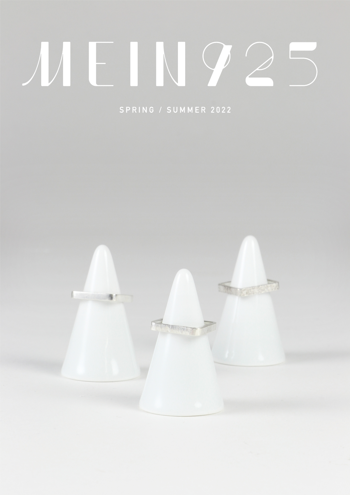
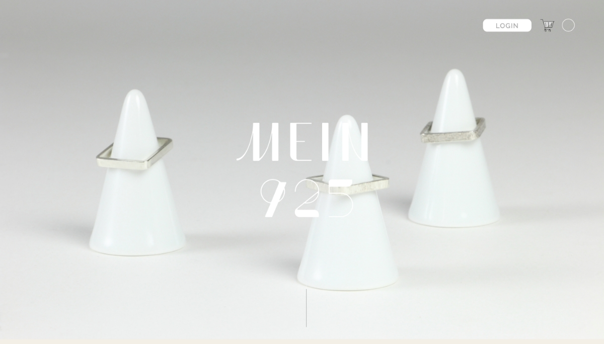
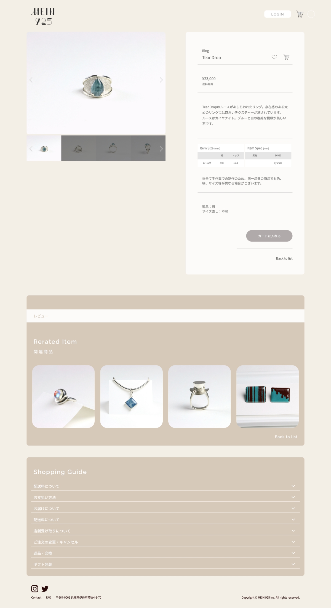
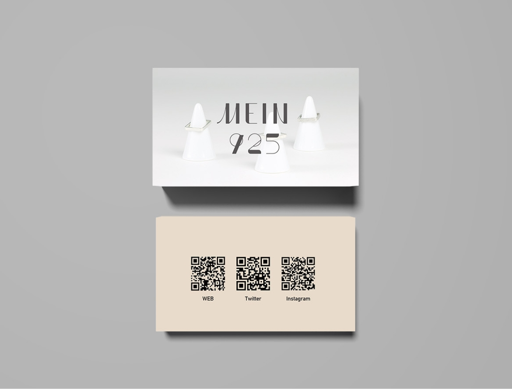
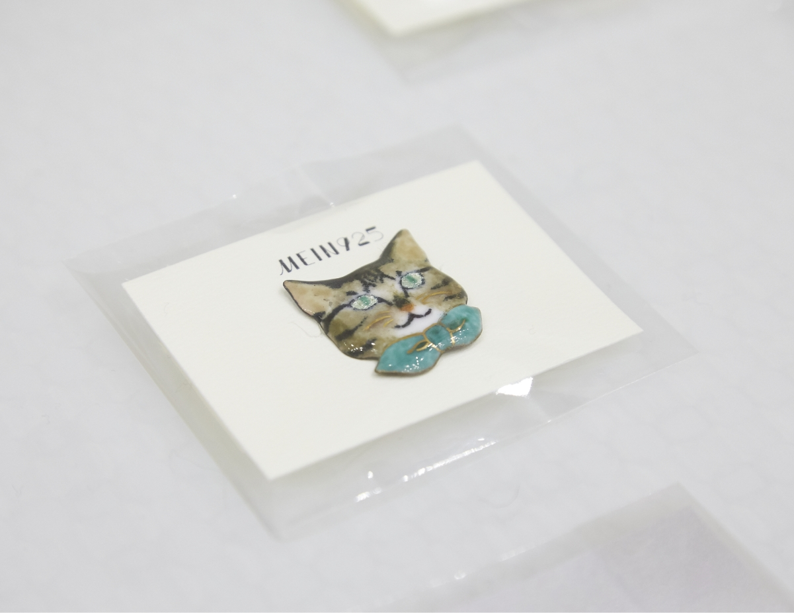
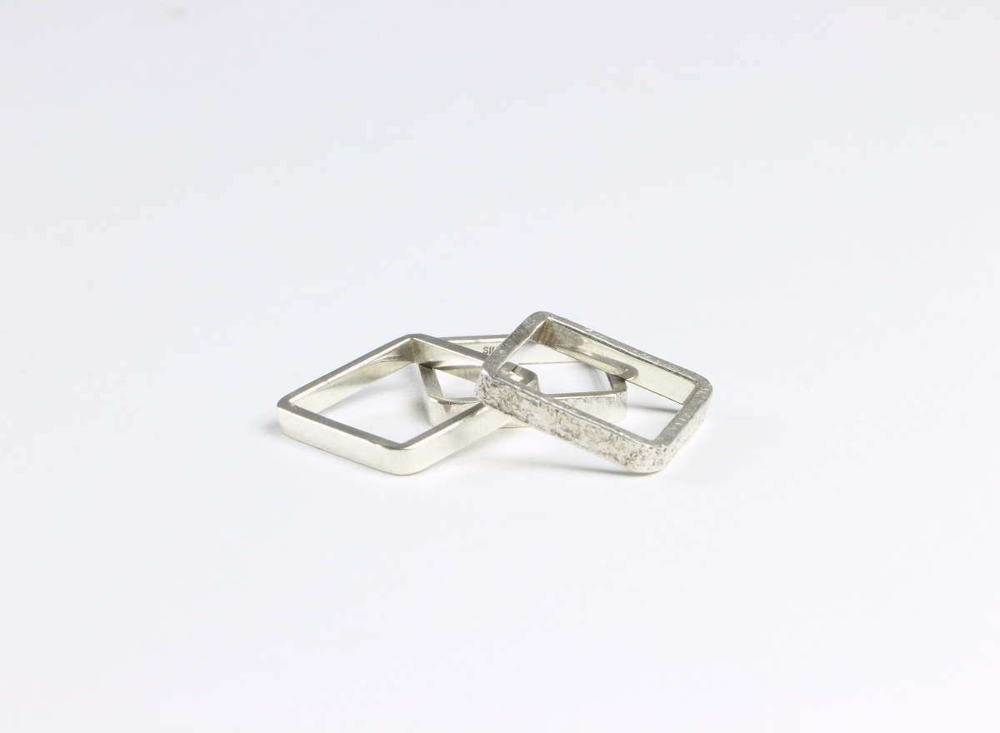
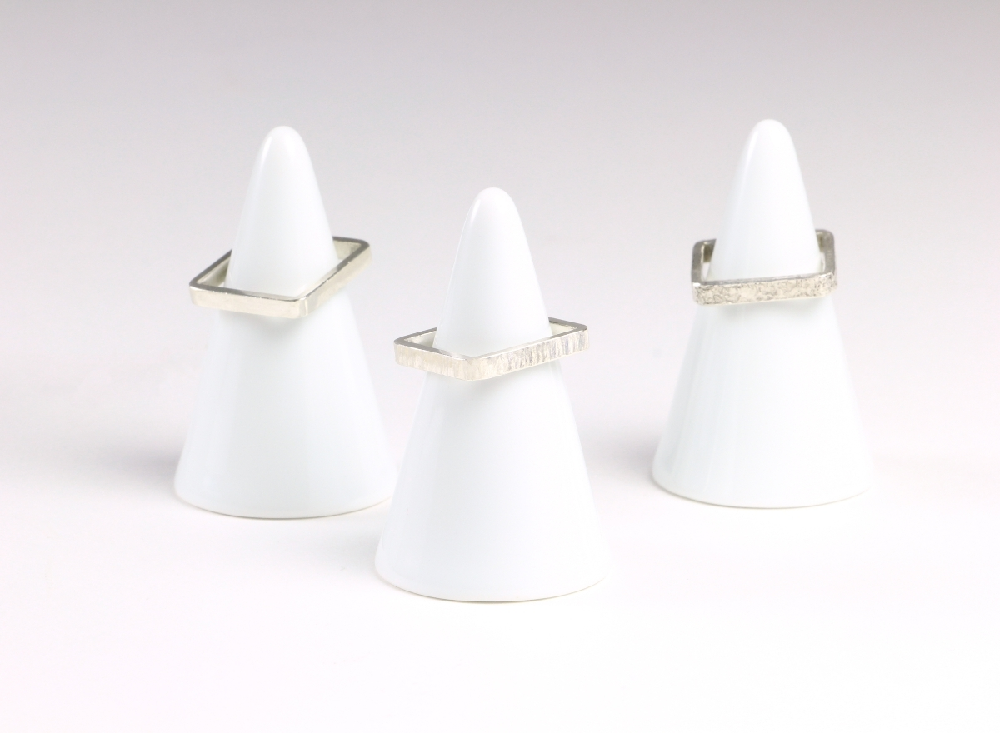
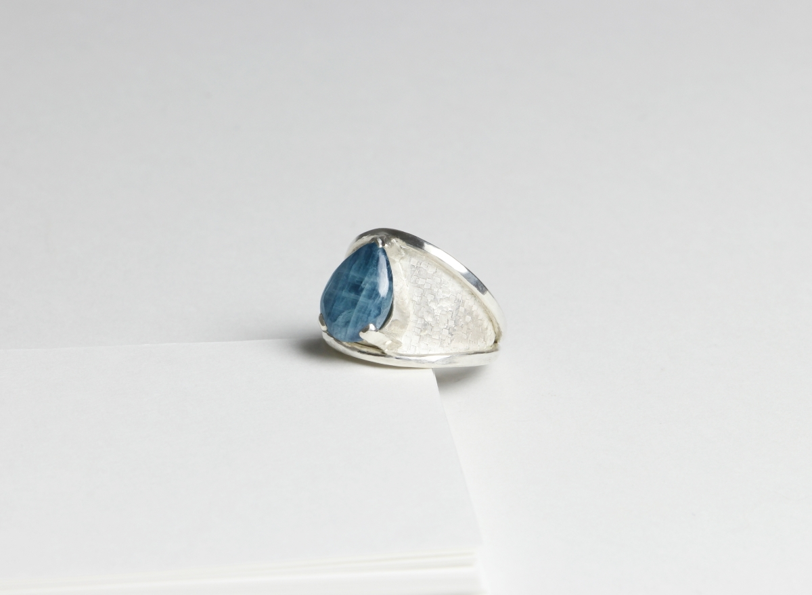
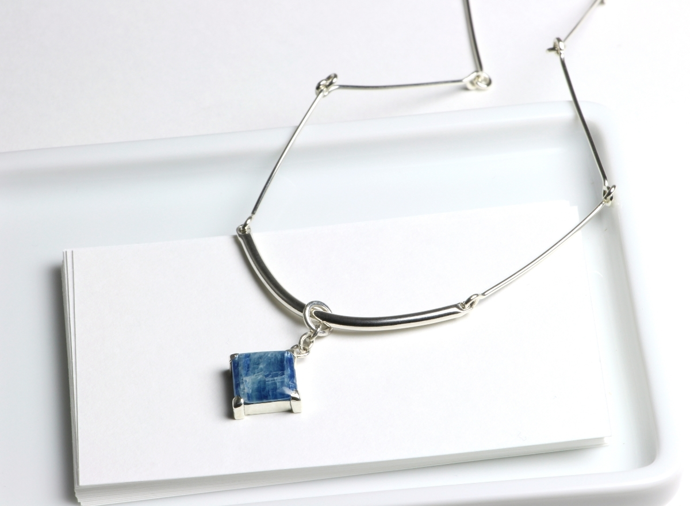
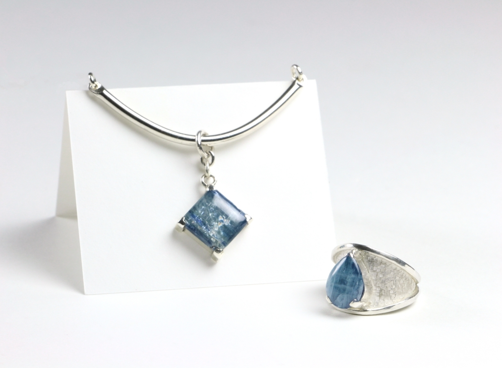
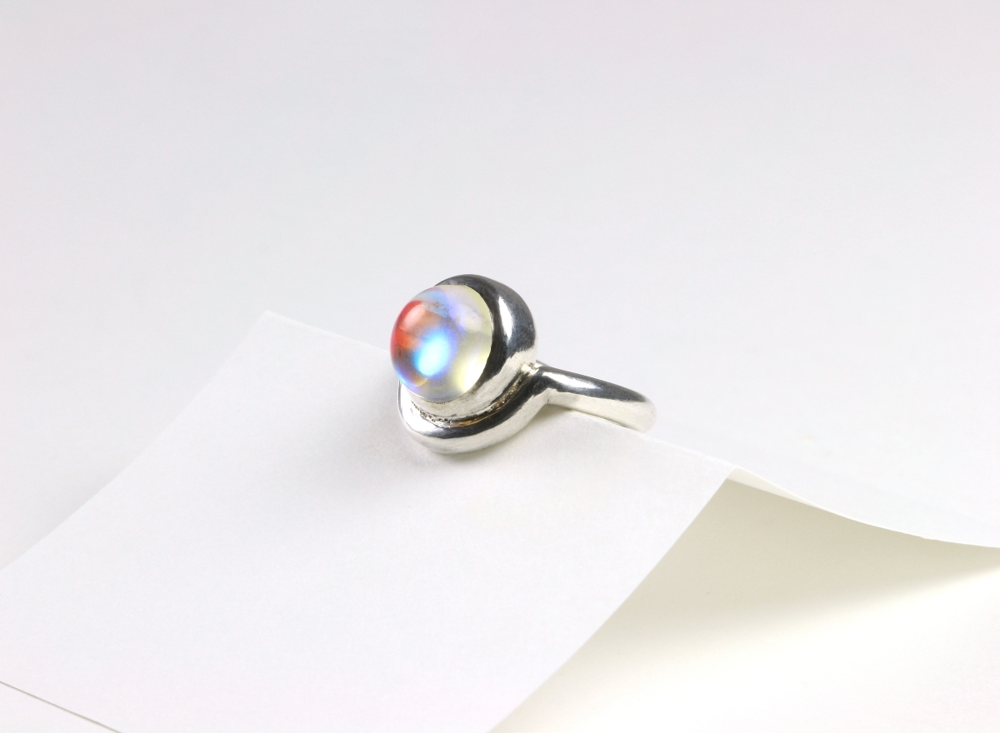
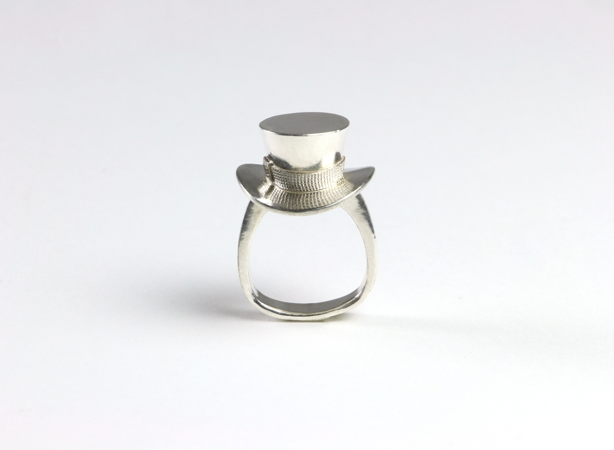
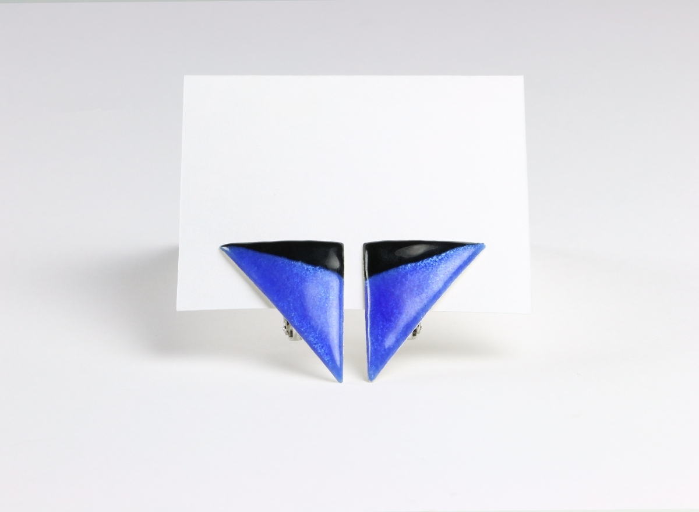
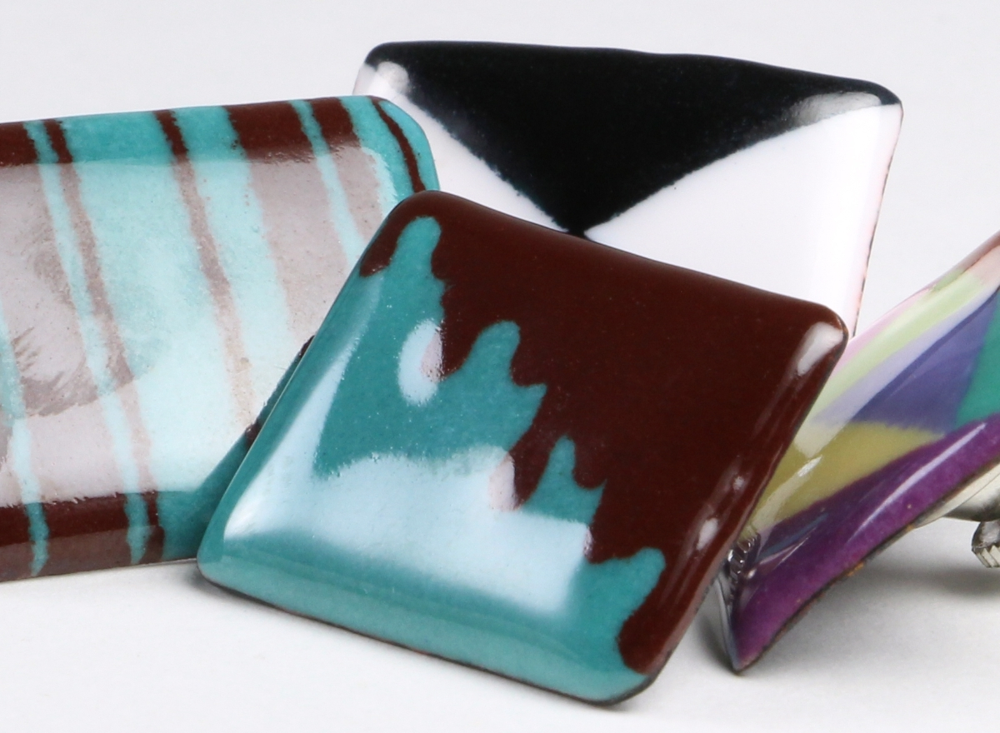